Batch Assigning Field Values
When entering records into a form, there may be times where you want to assign a value to a field across multiple records. For instance, you may know the name of a site for multiple artifacts within that site. You can enter the site name for each record individually, or you can save time by batch assigning field values to all the records contained within that site. This will fill in the designated field with the desired record across all records or selected records.
Batch Assigning Field Values Within A Form
For steps on how to batch assign fields to specific records, go to the next section. If you want to batch assign fields to all records located within a form then follow these steps:
-
Navigate to the form that you want to batch assign field values and select either the menu for your form, or side navigation bar.
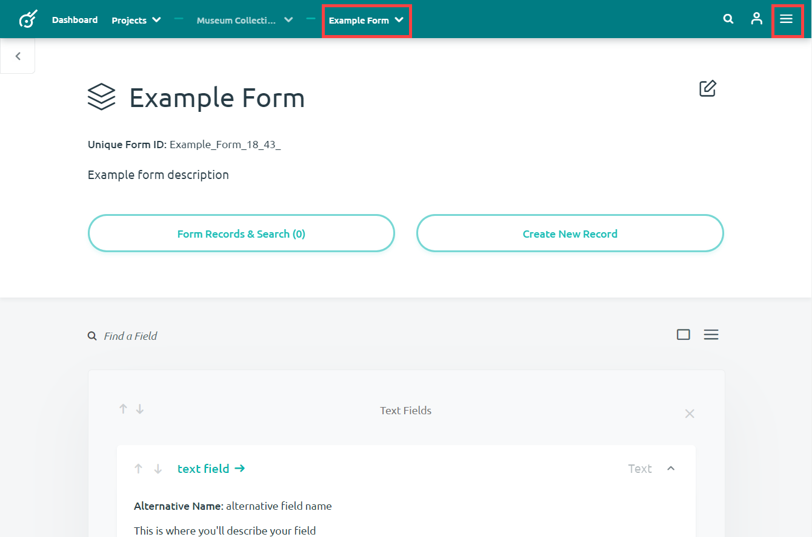
-
Select the Batch Assign Field Values options from either menu option.
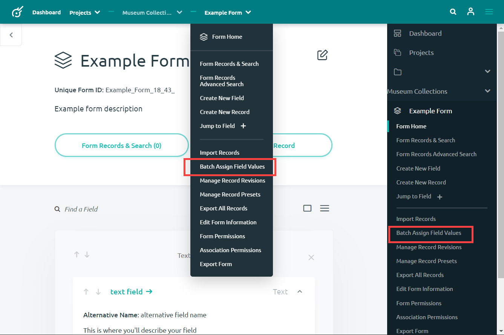
-
This will bring you to the Batch Assign Field Options page. Here you will select the Search and Select a Field to Batch Assign bar to search and select your desired field.
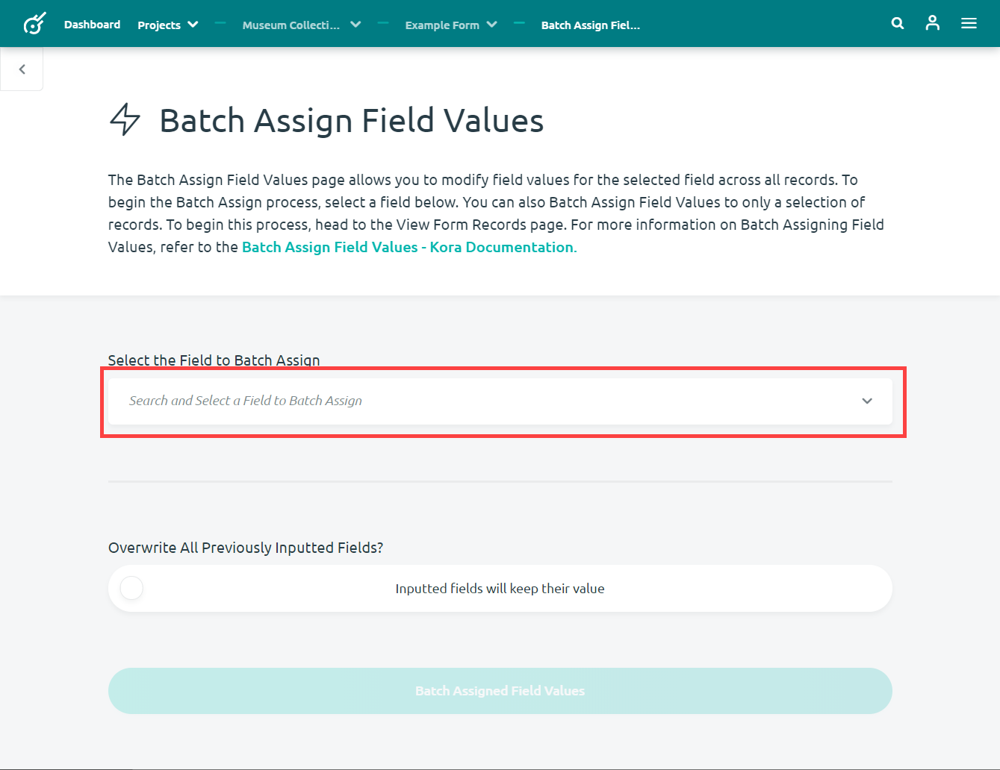
-
A drop down menu will appear for you to select your desired field.
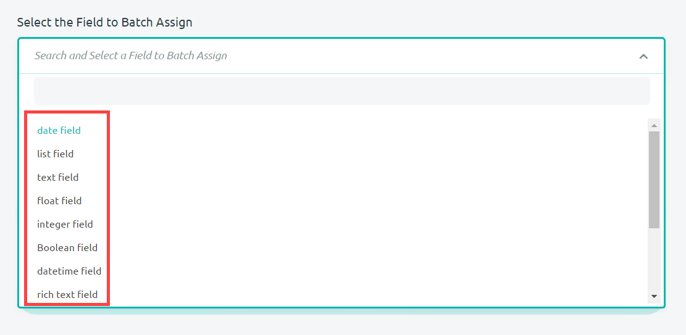
-
Once you select a field to batch assign, an interface will appear for you to enter your desired value. For this example, a text field was selected.
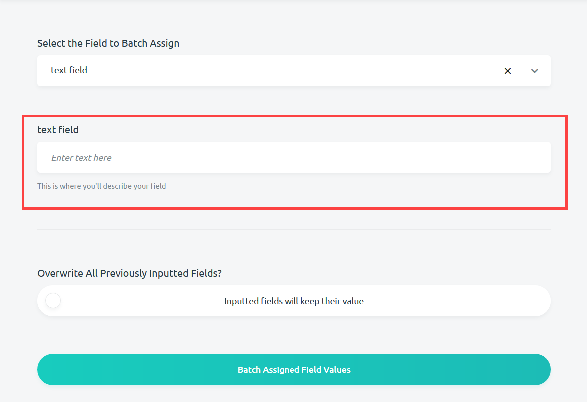
-
After entering your desired value, you have the option to select whether or not this value overwrites values already written into records. Select the Inputted values will be overwritten option if you want previously entered values to be deleted and replaced.
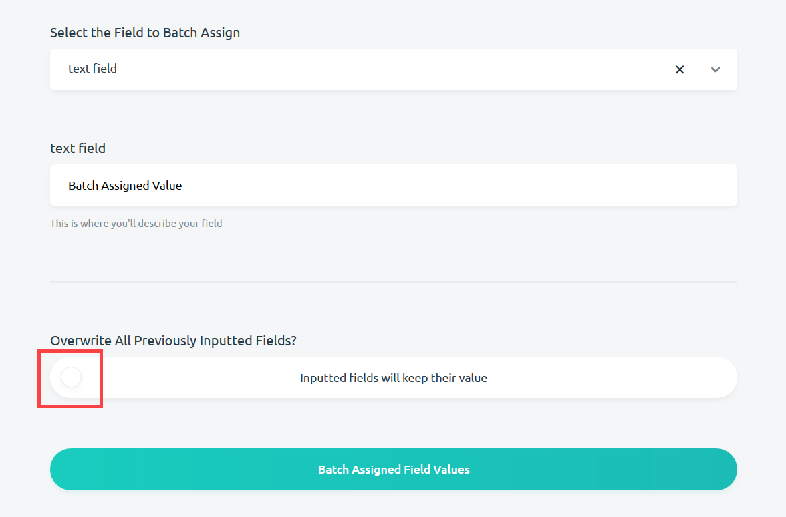
-
After selecting all the desired options for the batch assignment, select the Batch Assigned Field Values button at the bottom of the page to carry out the batch assignment.
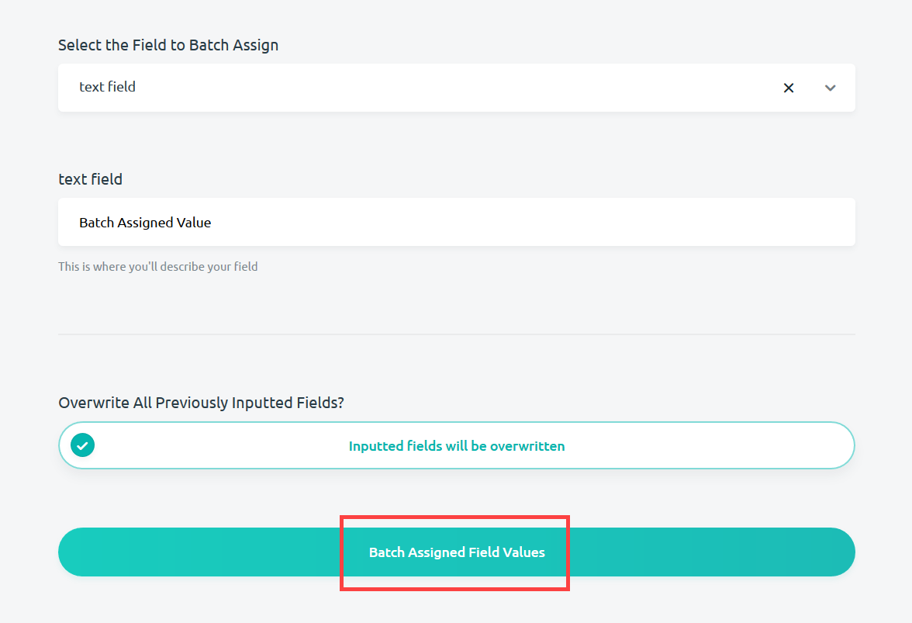
-
This will bring you to the Form Record & Search page where a notification will confirm that you have been successful at batch assigning field records to all records within your form. From this page you may also batch assign to only selection of records (start at step 3 of the next section).
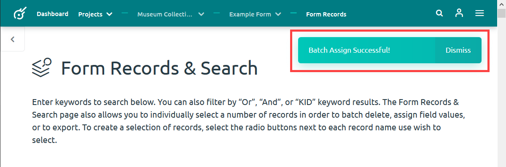
Selecting Specific Records for Batch Assigning
Sometimes you will want to batch assign only a selection of records rather than all the records within that form. Follow these steps to do so:
-
Navigate to the form that you want to batch assign field values and select either the menu for your form, or side navigation bar.
-
Select the Form Records & Search option from either navigation menu to go to that page. Additionally, you may also get to the Form Records & Search page by clicking the Form Records and Search () button at the form home.
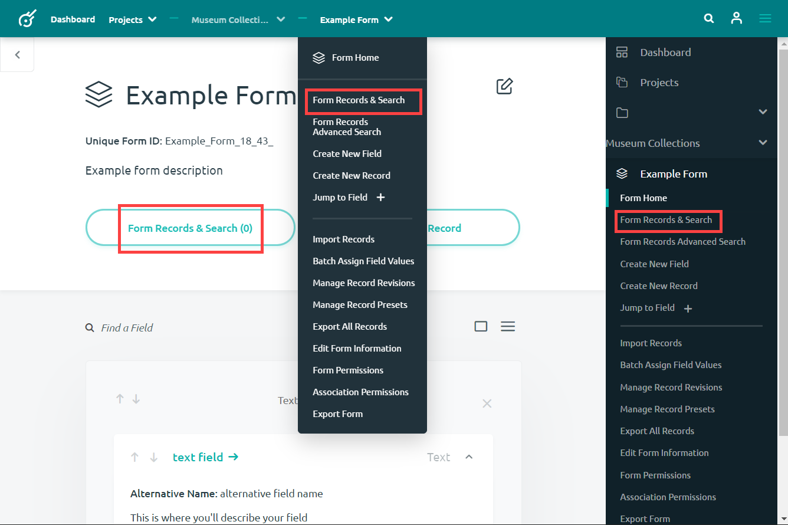
-
From the Form Records & Search page, you will be able to browse and search through records that you have already entered. You may browse through all records or search for a particular subset of records that you want to work with. You may select your chosen records by using the circle option to the left of each record.
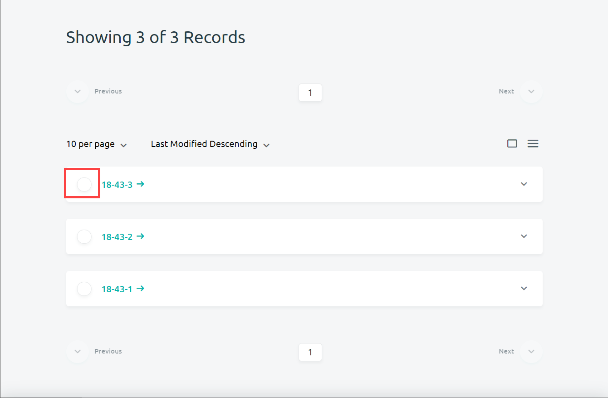
-
Once you've selected the records that you want to batch assign field values to, click on the batch assign () button that appears at the bottom of the page.
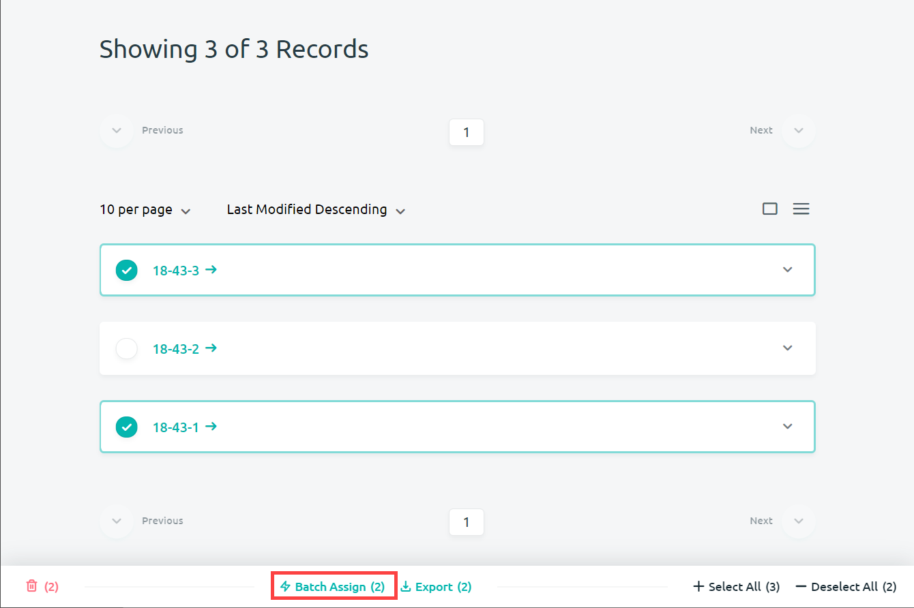
-
You have now selected a subset of all your record to batch assign fields to and will be brought to the batch assign field option page.
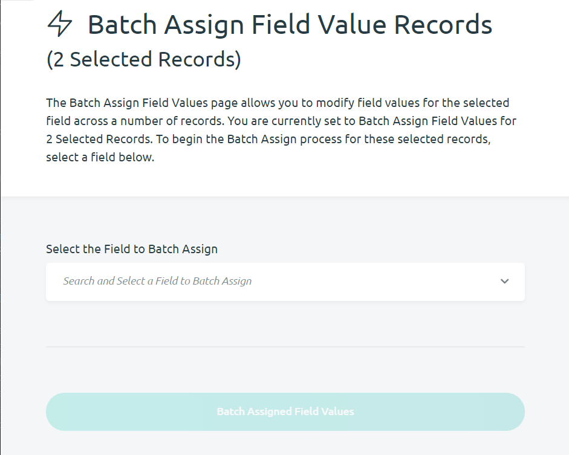
-
From the batch assign field options page you will follow the steps to batch assign field values as outlined in the previous section (start at step 3). Note that you will not have the option to overwrite previous values, because all field values in the selected record will be batch assigned your given value.